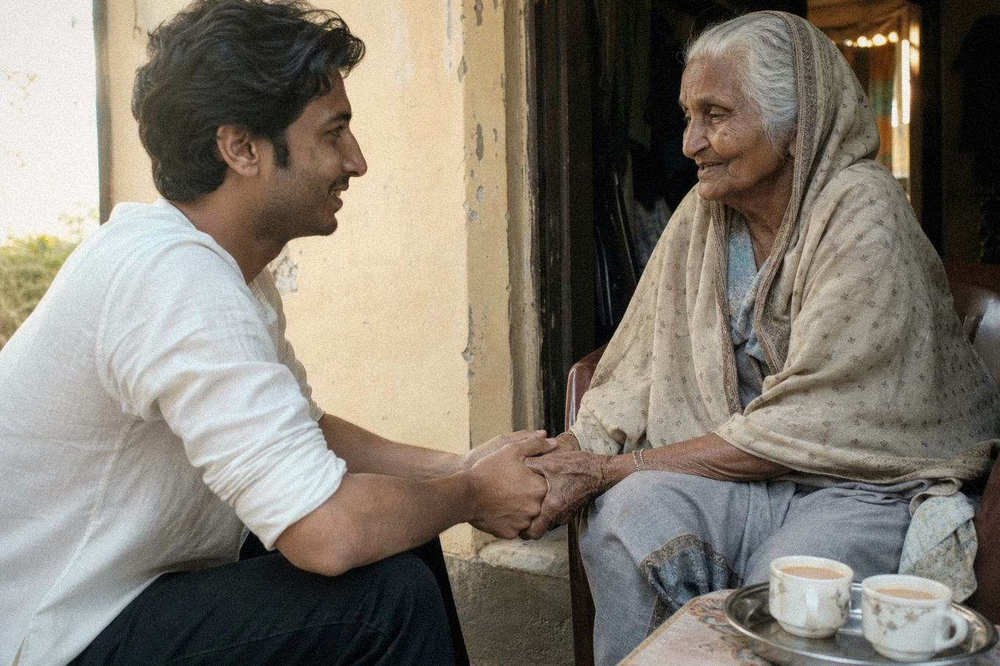

About Mankind First Foundation
A registered humanitarian foundation from Multan, working across South Punjab since 2024 — built to put people first.
From one van and six friends to 210 volunteers
Mankind First Foundation began in March 2024, when a small group of friends in Multan rented a van, loaded it with flour bags and cooked meals, and drove to families they knew were going hungry on the city’s outskirts. That first weekend fed 60 households — and set the standard for everything since: go yourself, listen first, hand over with respect.
Today we are a registered foundation with a nine-person core team, a 210-strong volunteer network and programs running in 14 communities across South Punjab — from Multan and Khanewal to Bahawalpur and Dera Ghazi Khan.
Registered
Societies Registration Act, 1860
Reg. No. RP/5907/2024 · Multan
Head office
Second Floor, Al-Hamd Plaza,
Bosan Road, Multan, Punjab

Elderly care visit in Vehari — time, attention and respect.Hardship is human. So is helping.
South Punjab carries some of Pakistan’s deepest poverty — and its most generous communities.
Districts like Muzaffargarh, Rajanpur and DG Khan face recurring floods, stretched schools and clinics, and villages where clean water still means a two-kilometre walk. We exist to close that gap with practical, verified support — and to prove that a small, honest foundation can move a very large needle when the community stands behind it.
Listen first
Every program starts with a community jirga — the people who live the need define it, and a local committee verifies every distribution.
Act with dignity
Needs assessments stay confidential. No cameras without consent. No family is ever publicly labelled as a beneficiary.
Prove it
Distribution lists, receipts and photos are filed for every activity. Our books are audited annually — 82% of spending goes to programs.
The team behind the work
Nine core staff, 210 registered volunteers, and a community committee in every district we serve.
Programs team (4)
Plans and runs every distribution, camp and class — including field verification of every beneficiary list.
Safeguarding & compliance (2)
Protects the people we serve, screens volunteers, keeps our records and registration in order.
Fundraising & comms (3)
Runs campaigns, manages donor reporting and publishes the numbers — good and bad — every quarter.
Identify real needs
Community committees and door-to-door surveys build a confidential, needs-ranked list before we commit a single rupee.
Plan responsibly
Each activity gets a written plan: budget, beneficiary criteria, safeguarding measures and a named field lead.
Deliver with respect
Direct, local, and personal — distributions run by volunteers who know the families by name.
Report honestly
Counts, costs and photos go into our quarterly updates and annual audit — published on this website.
The values behind the name
Human dignity. Compassion. Accountability. Community. Inclusion. These are not decorations — they are the test every decision must pass.